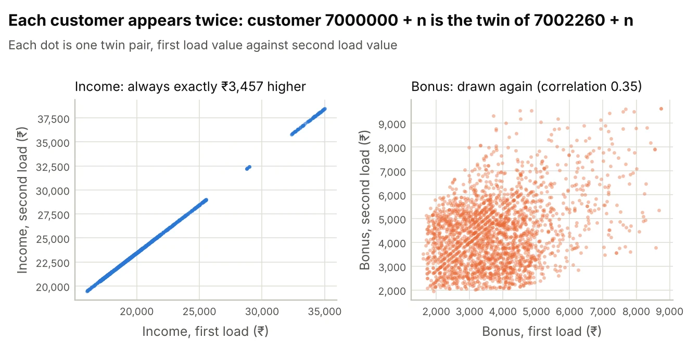

(opens the full-size chart)End-to-End Project · Insurance
Agent Bonus Data Warehouse
- Problem
- Before predicting agent bonuses, prove the data can be trusted and build the KPI layer that the models, the Excel dashboard and Power BI all read.
- Data
- 4,520 customer records from an Excel extract, loaded into a raw table and reconciled to control totals taken from the source.
- Approach
- Six portable scripts (schema, validate, clean, star, KPIs, predictions) that run unchanged on SQLite, PostgreSQL 16 and MySQL 8: 22 audit checks written to an audit table; a star schema with 11 dimensions; KPI views with medians from ROW_NUMBER and COUNT windows, NTILE quartiles, LAG and RANK; and a scored fact table built with a LEFT JOIN instead of an engine-specific UPDATE.
- Result
- Every engine gives the same answer: 22 audit checks (18 pass, 4 flagged for review, 0 fail), 42 of 42 reconciliation checks, and all 12 tables and both prediction views identical to SQLite. The flags are findings: 2,887 records with an “age” under 18, 1,029 labels outside the reference list (such as “Fe male”), and the twin loads. A business-rule check confirms every bonus sits within 100 to 200 rupees of cover per bonus rupee.
- Recommendation
- Keep twins on the same side of every train and test split, fix the labels at source, ask the data owner what the Age field means, and point Power BI straight at the MySQL or PostgreSQL warehouse, which holds exactly the columns of the report’s fact table.